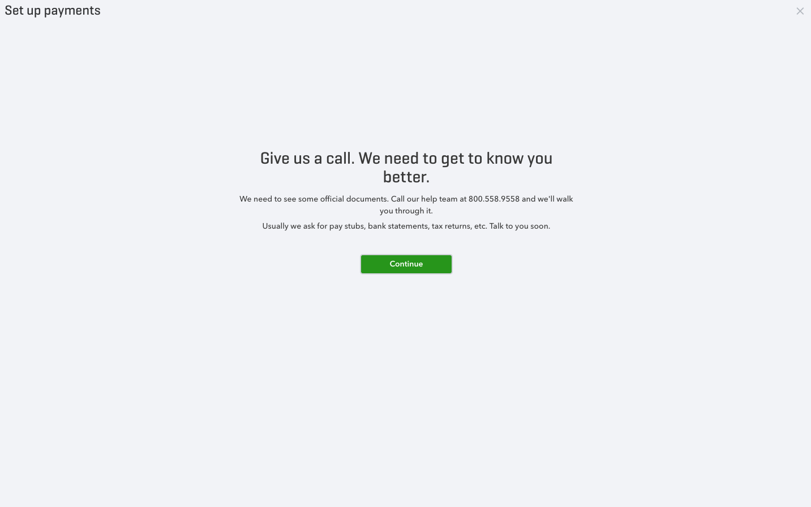

Docuploader & Intuit Design Systems [IDS] Accordion Component
DocUploader was a feature that was created based on a huge customer pain point: providing ID documentation so that the customer could be verified for using Payments with Quickbooks. This project took roughly 4 weeks to implement, test, and release end to end.
Problem
As part of the onboarding process, about 10% of customers sign up need to verify their identity by providing a form of Identification Document (Passport, Driver License, etc). The previous process was that the customer had to call customer care and fax/email their documentation, which took roughly 24-48 hours to complete, depending on what was needed. This is a huge pain point for the customer: calling customer care is never fun, and sending over sensitive information over the phone can be difficult.
 Documentation Needed state: message displayed to user to call customer care to resolve ID verificationSolution
Docuploader was created with the intention of providing a faster way for a user to verify their Identity. Considerations were made so that the upload process would be straightforward: provide flexibility in terms of documents that could be used for verification and provide multiple ways to upload. We wanted to let the user be confident with what they are submitting, thus providing a thumbnail of the uploaded image, as well as a way to view it at a greater scale. The purpose of DocUploader was only to provide a way to upload an image, on the UI and service side, there was nothing done to verify fraudulent or bad photos - this step was handled on the Payment or Risk processor's side.
With DocUploader, the customer was able to attach a picture and send it online without having to talk to a care agent with the following steps:
Impact
With DocUploader, a process that took 24-48 hours was cut down to about 10 minutes. Roughly 200+ uploads were made within the first month, and that saved Intuit about at least $5,000 at $25 per care call. However, the most important part was that we were able to save the user’s time as well as care agents’ time.
Design issues that surfaced during development:
Initially, I volunteered to take up a task to research what it would take to make an accordion component for a new onboarding flow my team was going to work on. After doing all the research and having countless meetings with the designers to figure out every single edge case that the accordion would have, I really wanted to build that component. Due to my NDA, I cannot show what it looks like just yet, as it is not officially released even within Intuit, but stay tuned!
Problem
A new UI component is introduced to Quickbooks Online: the accordion + container-like features. This component would be used throughout quickbooks for various onboarding flows. There are no existing components from Intuit's proprietary component library, and furthermore, the current component library would also be deprecated. The designs presented were simply done through sketch; thus, things like easing (animation) as well as accessbility were not thought of during the intial design process. Current onboarding flows would either be too long or broken into multiple pages, thus forcing a user with a very rigid flow.
Solution
The ultimate goal was to not only make a component that my team can use, but also make a component that could be potentially used by other teams. This accordion was a crucial component in a sense that it could provide users flexibility when it came to filling out forms: a form broken down to sections that could not only summarize each section but also provide the user the freedom to preview what they need to accomplish and to start wherever they desired. This accordion was made so that custom header and body content could be used so that consumers of this component had full control as to what they want to display to the user. This is powerful so that the accordion could be dynamic: different states of the accordion could show different content.
Key Features:
Impact
At the end of the contribution, I was able to make something that could be used throughout Intuit, as I felt that it would be ultimately inefficient for another team to develop the same thing. In fact, multiple teams were designing new UIs with the accordion style that my team was using. This accordion currently sits as a lab component, but once two teams use it and it meets proper code coverage, it will be graduated into IDS officially, and it will be packaged into every project automatically as currently it is available in Intuit’s npm registry meaning developers have to install it manually.